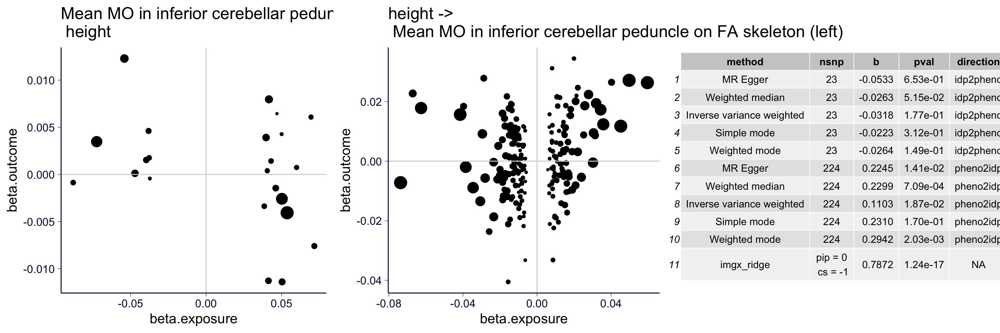
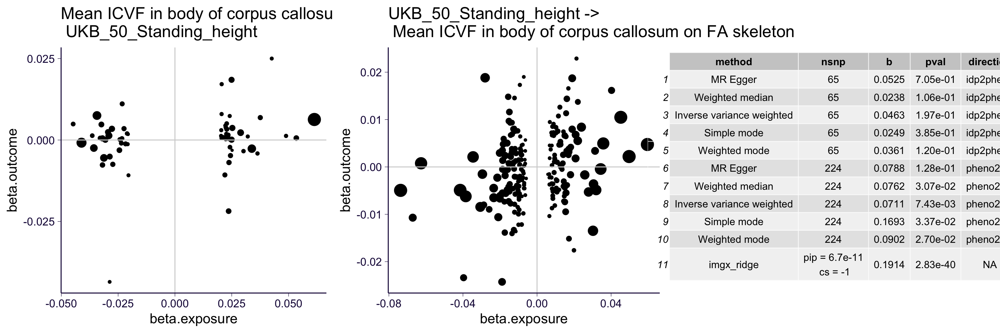
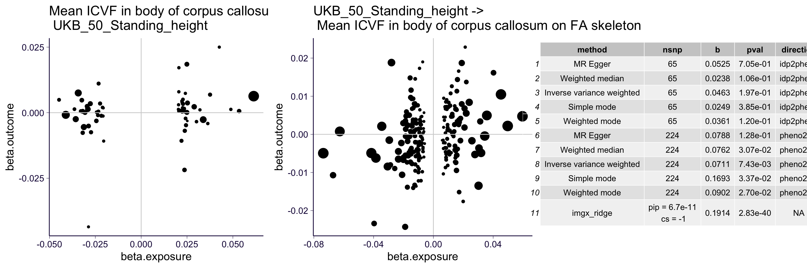

Summary report on ImageXcan and S-ImageXcan results
15 December, 2020
rm(list = ls())
library(ggplot2)
theme_set(theme_bw(base_size = 15))
source('https://gist.githubusercontent.com/liangyy/43912b3ecab5d10c89f9d4b2669871c9/raw/3ca651cfa53ffccb8422f432561138a46e93710f/my_ggplot_theme.R')
source('https://raw.githubusercontent.com/liangyy/misc-tools/master/plot_tool/plot_tools.R')
library(dplyr)
options(stringsAsFactors = F)
library(patchwork)
library(data.table)
options(datatable.fread.datatable = F)
source('rlib.R')
library(ggpubr)
library(pander)
panderOptions("table.split.table", Inf)
pheno_interest = c('weekly_alcohol', 'recurrent_depressive_disorder', 'parent_depression', 'parent_AD', 'handedness', 'daily_coffee', 'daily_cigarettes')
pheno_bcc = c('wbc', 'rbc', 'platelet', 'lymphocyte', 'monocyte', 'neutrophil', 'eosinophil', 'basophil')
pheno_imgx = c('height', 'bmi', pheno_interest, pheno_bcc)1 About
In this report, I present the results obtained from
- S-ImageXcan on 114 GTEx-GWAS phenotypes.
- ImageXcan on several selected phenotypes.
The results are based on gw-ridge predictor and elastic net predictor.
2 Load results
Loading GTEx-GWAS results.
pheno_list = read.table('../submission/simagexcan/gtex_gwas_list.txt', header = F)$V1
models = list(ridge = '', en = '_en')
df = list()
for(model in names(models)) {
for(idp_type in c('dmri', 't1')) {
for(p in pheno_list) {
fn = paste0('~/Desktop/tmp/ukb_idp/simagexcan/results', models[[model]], '/', idp_type, '_gtex_gwas_x_', p, '_x_simagexcan.csv')
# if(file.exists(fn)) {
tmp = read.csv(fn)
df[[length(df) + 1]] = tmp %>% mutate(phenotype = p, idp_type = idp_type, model = model)
# }
}
}
}
df_gtex_gwas = do.call(rbind, df)Load results of selected phenotypes.
df = list()
models = list(ridge = '', en = 'en_')
for(model in names(models)) {
for(idp_type in c('dmri', 't1')) {
tmp1 = read.csv(paste0('~/Desktop/tmp/ukb_idp/data/imagexcan_round_1.linear.', models[[model]], idp_type, '.csv'))
tmp2 = read.csv(paste0('~/Desktop/tmp/ukb_idp/data/imagexcan_round_1.susie.', models[[model]], idp_type, '.csv'))
tmp = inner_join(tmp1, tmp2, by = c('IDP', 'phenotype'))
tmp = tmp %>% filter(phenotype %in% pheno_imgx)
df[[length(df) + 1]] = tmp %>% mutate(idp_type = idp_type, model = model)
}
}
df_selected_pheno = do.call(rbind, df) %>% rename(cs95 = cs)
# we need to flip the sign of imagexcan result since we flip the sign in prediction pipeline
df_selected_pheno$bhat = - df_selected_pheno$bhatLoad IDP annotations.
t1 = readRDS('../misc_data/process_t1/t1_meta.rds')
t1 = t1 %>% mutate(IDP = paste0('IDP-', FieldID))
dmri = readRDS('../misc_data/download_some_matching_files/annot_dmri_idps.rds')
dmri = dmri %>% mutate(IDP = paste0('IDP-', FieldID))
idps = c('t1', 'dmri')
df_annot = rbind(
t1 %>% select(IDP, Field),
dmri %>% select(IDP, Field)
)3 Overview of the results
p1 = qqplot_by_group(df_gtex_gwas$pval, df_gtex_gwas$model) + th + ggtitle('QQ-plot: GTEx-GWAS phenotypes')
p2 = qqplot_by_group(df_selected_pheno$pval, df_selected_pheno$model) + th + ggtitle('QQ-plot: Selected phenotypes')
p1 + p2p1 = df_gtex_gwas %>% reshape2::dcast(IDP + phenotype + idp_type ~ model, value.var = 'pip') %>% ggplot() +
geom_point(aes(x = ridge, y = en), alpha = 0.05) +
th + ggtitle('PIP: GTEx-GWAS phenotypes')
p2 = df_selected_pheno %>% reshape2::dcast(IDP + phenotype + idp_type ~ model, value.var = 'pip') %>% ggplot() +
geom_point(aes(x = ridge, y = en), alpha = 0.05) +
th + ggtitle('PIP: Selected phenotypes')
p1 + p2## Warning: Removed 7673 rows containing missing values (geom_point).## Warning: Removed 1139 rows containing missing values (geom_point).Take-away:
- Overall, we see higher significance in ridge-based predictors than EN-based ones.
- The PIP of ridge and EN-based predictors do not always agree among signal candidates.
4 Comparing ImageXcan and S-ImageXcan
There are some overlapped phenotypes in GTEx-GWAS phenotypes and the selected set of phenotypes. So, we can compare the ImageXcan and S-ImageXcan results among these phenotypes.
# get the mapping between the two phenotype sets
df_map = data.frame(
id = c('wbc', 'rbc', 'platelet', 'lymphocyte', 'monocyte', 'neutrophil', 'eosinophil', 'height', 'bmi'),
gwas = c('Astle_et_al_2016_White_blood_cell_count', 'Astle_et_al_2016_Red_blood_cell_count', 'Astle_et_al_2016_Platelet_count', 'Astle_et_al_2016_Lymphocyte_counts', 'Astle_et_al_2016_Monocyte_count', 'Astle_et_al_2016_Neutrophil_count', 'Astle_et_al_2016_Eosinophil_counts', 'UKB_50_Standing_height', 'UKB_21001_Body_mass_index_BMI')
)
df_compare = inner_join(
df_gtex_gwas %>% inner_join(df_map, by = c('phenotype' = 'gwas')) %>% select(-phenotype) %>% rename(phenotype = id),
df_selected_pheno,
by = c('phenotype', 'IDP', 'model', 'idp_type'),
suffix = c('.simgx', '.imgx')
)p1 = df_compare %>% filter(pval.imgx < 1e-3 | pval.simgx < 1e-3) %>% ggplot() +
geom_point(aes(x = bhat.imgx, y = bhat.simgx)) + facet_wrap(~phenotype, scales = 'free') +
th2
p2 = df_compare %>% mutate(
z.imgx = p2z(pval.imgx, bhat.imgx),
z.simgx = p2z(pval.simgx, bhat.simgx)
) %>%
ggplot() +
geom_point(aes(x = z.imgx, y = z.simgx), alpha = 0.05) + facet_wrap(~phenotype, scales = 'free') +
geom_abline(slope = 1, intercept = 0, color = 'gray') +
th2
p1 + p2df_compare %>%
ggplot() +
geom_point(aes(x = pip.imgx, y = pip.simgx), alpha = 0.2) + facet_wrap(~phenotype, scales = 'free') +
geom_abline(slope = 1, intercept = 0, color = 'blue') +
theme(axis.text.x = element_text(angle = 90, vjust = 0.5, hjust = 0)) +
th2 Take-away:
- The marginal test statistics match (both bhat and z-score).
- Some of the PIP signals match but not all of them.
5 Selecting putative signals
Here, we want to select a set of putative signals and run through Mendeliance randomization (both directions) to verify its causal relationship to the phenotype. To do so, we select signals passing either of the two criteria below.
- Bonferroni significant at \(\alpha = 0.001\) (we used stringent cutoff since there is some sort of inflation).
- Within 95% credible set or PIP > 0.5.
df_gtex_gwas_signif = df_gtex_gwas %>% group_by(idp_type, model) %>% mutate(p_adj = pval * n()) %>% ungroup() %>%
filter(cs95 > 0 | pip > 0.5 | p_adj < 0.001)
df_selected_pheno_signif = df_selected_pheno %>% group_by(idp_type, model) %>% mutate(p_adj = pval * n()) %>% ungroup() %>%
filter(cs95 > 0 | pip > 0.5 | p_adj < 0.001)
df_gtex_gwas_signif %>% group_by(idp_type, model) %>% summarize(nsig = n()) %>% pander(caption = 'The number of putative signals extracted from GTEx-GWAS phenotypes')## `summarise()` regrouping output by 'idp_type' (override with `.groups` argument)| idp_type | model | nsig |
|---|---|---|
| dmri | en | 436 |
| dmri | ridge | 1103 |
| t1 | en | 155 |
| t1 | ridge | 357 |
df_selected_pheno_signif %>% group_by(idp_type, model) %>% summarize(nsig = n()) %>% pander(caption = 'The number of putative signals extracted from the selected phenotypes')## `summarise()` regrouping output by 'idp_type' (override with `.groups` argument)| idp_type | model | nsig |
|---|---|---|
| dmri | en | 293 |
| dmri | ridge | 652 |
| t1 | en | 76 |
| t1 | ridge | 151 |
Take-away:
- The ridge-based predictors result in more putative signals (about 3-4 times of the number of signals identified in the EN-based predictors).
# load the map between our phenotypes and the coresponding GWAS datasets in open GWAS database
df_og_gtex_gwas = readRDS('../misc_data/gtex_gwas_to_open_gwas.rds')
df_og_selected_pheno = readRDS('../misc_data/selected_pheno_to_open_gwas.rds')
df_gtex_gwas_signif_out = df_gtex_gwas_signif %>% select(IDP, phenotype, idp_type) %>% distinct() %>% inner_join(df_og_gtex_gwas, by = 'phenotype')
for(dd in c('dmri', 't1')) {
sub = df_gtex_gwas_signif_out %>% filter(idp_type == dd) %>% select(-idp_type)
colnames(sub) = c('idp', 'pheno', 'pheno_code')
sub = sub[, c('pheno', 'pheno_code', 'idp')]
write.table(sub, paste0('../misc_data/summary_121520.gtex_gwas.', dd, '.signif.tsv'), quo = F, col = T, row = F, sep = '\t')
}
df_selected_pheno_signif_out = df_selected_pheno_signif %>% select(IDP, phenotype, idp_type) %>% distinct() %>% inner_join(df_og_selected_pheno, by = 'phenotype')
for(dd in c('dmri', 't1')) {
sub = df_selected_pheno_signif_out %>% filter(idp_type == dd) %>% select(-idp_type)
colnames(sub) = c('idp', 'pheno', 'pheno_code')
sub = sub[, c('pheno', 'pheno_code', 'idp')]
write.table(sub, paste0('../misc_data/summary_121520.selected_pheno.', dd, '.signif.tsv'), quo = F, col = T, row = F, sep = '\t')
}6 Mendelian randomization results
Here we run 5 MR tests for each of the IDP-phenotype pair. And we show the pairs where there are at least 4 MR tests give nominal significant results in one of the two directions.
collector_mr = list()
collector_data = list()
idps = c('t1', 'dmri')
for(dd in idps) {
sub = df_selected_pheno_signif_out %>% filter(idp_type == dd) %>% select(-idp_type)
for(i in 1 : nrow(sub)) {
tmp = readRDS(paste0('~/Desktop/tmp/ukb_idp/mr_summary_121520/MR.selected_pheno_', dd, '.', sub$IDP[i], '_x_', sub$phenotype[i], '.rds'))
if(sum(is.na(tmp$idp2pheno$mr)) == 1 | sum(is.na(tmp$pheno2idp$mr)) == 1) {
next
}
n_idp2pheno = sum(tmp$idp2pheno$mr$pval < 0.05)
n_pheno2idp = sum(tmp$pheno2idp$mr$pval < 0.05)
if(n_idp2pheno > 2 | n_pheno2idp > 2) {
collector_mr[[length(collector_mr) + 1]] = rbind(
tmp$idp2pheno$mr %>% mutate(direction = 'idp2pheno', pheno = sub$phenotype[i], IDP = sub$IDP[i], is_forward = n_idp2pheno > 3, is_pass = n_idp2pheno > 3 | n_pheno2idp > 3),
tmp$pheno2idp$mr %>% mutate(direction = 'pheno2idp', pheno = sub$phenotype[i], IDP = sub$IDP[i], is_forward = n_idp2pheno > 3, is_pass = n_idp2pheno > 3 | n_pheno2idp > 3)
)
collector_data[[length(collector_data) + 1]] = rbind(
tmp$idp2pheno$data %>% select(beta.exposure, beta.outcome, pval.exposure) %>% mutate(direction = 'idp2pheno', pheno = sub$phenotype[i], IDP = sub$IDP[i], is_forward = n_idp2pheno > 3, is_pass = n_idp2pheno > 3 | n_pheno2idp > 3),
tmp$pheno2idp$data %>% select(beta.exposure, beta.outcome, pval.exposure) %>% mutate(direction = 'pheno2idp', pheno = sub$phenotype[i], IDP = sub$IDP[i], is_forward = n_idp2pheno > 3, is_pass = n_idp2pheno > 3 | n_pheno2idp > 3)
)
}
}
}
for(dd in idps) {
sub = df_gtex_gwas_signif_out %>% filter(idp_type == dd) %>% select(-idp_type)
for(i in 1 : nrow(sub)) {
tmp = readRDS(paste0('~/Desktop/tmp/ukb_idp/mr_summary_121520/MR.gtex_gwas_', dd, '.', sub$IDP[i], '_x_', sub$phenotype[i], '.rds'))
if(sum(is.na(tmp$idp2pheno$mr)) == 1 | sum(is.na(tmp$pheno2idp$mr)) == 1) {
next
}
n_idp2pheno = sum(tmp$idp2pheno$mr$pval < 0.05)
n_pheno2idp = sum(tmp$pheno2idp$mr$pval < 0.05)
if(n_idp2pheno > 2 | n_pheno2idp > 2) {
collector_mr[[length(collector_mr) + 1]] = rbind(
tmp$idp2pheno$mr %>% mutate(direction = 'idp2pheno', pheno = sub$phenotype[i], IDP = sub$IDP[i], is_forward = n_idp2pheno > 3, is_pass = n_idp2pheno > 3 | n_pheno2idp > 3),
tmp$pheno2idp$mr %>% mutate(direction = 'pheno2idp', pheno = sub$phenotype[i], IDP = sub$IDP[i], is_forward = n_idp2pheno > 3, is_pass = n_idp2pheno > 3 | n_pheno2idp > 3)
)
collector_data[[length(collector_data) + 1]] = rbind(
tmp$idp2pheno$data %>% select(beta.exposure, beta.outcome, pval.exposure) %>% mutate(direction = 'idp2pheno', pheno = sub$phenotype[i], IDP = sub$IDP[i], is_forward = n_idp2pheno > 3, is_pass = n_idp2pheno > 3 | n_pheno2idp > 3),
tmp$pheno2idp$data %>% select(beta.exposure, beta.outcome, pval.exposure) %>% mutate(direction = 'pheno2idp', pheno = sub$phenotype[i], IDP = sub$IDP[i], is_forward = n_idp2pheno > 3, is_pass = n_idp2pheno > 3 | n_pheno2idp > 3)
)
}
}
}
df_data = do.call(rbind, collector_data) %>% inner_join(df_annot, by = 'IDP')
df_mr = do.call(rbind, collector_mr) %>% inner_join(df_annot, by = 'IDP')6.1 Some results to high light
Here I hand pick some results that look interesting. The full list of significant results are listed in the following sections.
- IDP -> Phenotype
df_all_signif = rbind(df_selected_pheno_signif, df_gtex_gwas_signif)
plot_pair = function(pheno_, idp_) {
mydat = df_data %>% filter(pheno == pheno_, IDP == idp_)
mymr = df_mr %>% filter(pheno == pheno_, IDP == idp_)
idp_name = mydat$Field[1]
gwas_name = mydat$pheno[1]
idp_id = mydat$IDP[1]
this_result = df_all_signif %>% filter(IDP == idp_id, phenotype == gwas_name)
plist = list()
plist[[length(plist) + 1]] = mydat %>% filter(direction == 'idp2pheno') %>% ggplot() +
geom_point(aes(x = beta.exposure, y = beta.outcome, size = -log10(pval.exposure))) +
geom_vline(xintercept = 0, color = 'lightgray') +
geom_hline(yintercept = 0, color = 'lightgray') + th + ggtitle(paste0(idp_name, ' -> \n ', gwas_name)) +
theme(legend.position = 'none') # +
# geom_abline(data = this_result, aes(slope = bhat, intercept = 0, color = model))
plist[[length(plist) + 1]] = mydat %>% filter(direction == 'pheno2idp') %>% ggplot() + geom_point(aes(x = beta.exposure, y = beta.outcome, size = -log10(pval.exposure))) + geom_vline(xintercept = 0, color = 'lightgray') + geom_hline(yintercept = 0, color = 'lightgray') + th + ggtitle(paste0(gwas_name, ' -> \n ', idp_name)) +
theme(legend.position = 'none') # +
# geom_abline(data = this_result, aes(slope = 1 / bhat, intercept = 0, color = model))
# plist[[length(plist) + 1]] = gridExtra::tableGrob(df_mr %>% select(method, nsnp, b, pval, direction))
this_result2 = this_result %>% mutate(method = paste0('imgx_', model), nsnp = paste0('pip = ', signif(pip, digits = 2), '\n cs = ', cs95), b = bhat, direction = NA)
mymr = rbind(mymr %>% select(method, nsnp, b, pval, direction), this_result2 %>% select(method, nsnp, b, pval, direction))
qq = ggarrange(plist[[1]], plist[[2]], ggtexttable(format(mymr, digits = 3)), ncol = 3)
qq
}
plot_pair('UKB_21001_Body_mass_index_BMI', 'IDP-25853')
plot_pair('UKB_21001_Body_mass_index_BMI', 'IDP-25187')# plot_pair('GIANT_2017_BMI_Active_EUR', 'IDP-25187')
# plot_pair('bmi', 'IDP-25187')
plot_pair('UKB_23099_Body_fat_percentage', 'IDP-25573')
plot_pair('UKB_1160_Sleep_duration', 'IDP-25839')
# plot_pair('height', 'IDP-25710')
plot_pair('UKB_50_Standing_height', 'IDP-25710')- Phenotype -> IDP
plot_pair('GLGC_Mc_TG', 'IDP-25912')plot_pair('UKB_50_Standing_height', 'IDP-25003')
plot_pair('UKB_20002_1473_self_reported_high_cholesterol', 'IDP-25566')plot_pair('UKB_20016_Fluid_intelligence_score', 'IDP-25783')plot_pair('pgc.scz2', 'IDP-25361')
6.2 The whole list of results: IDP -> phenotype significant
df_tmp = df_mr %>% filter(is_forward == T, is_pass == T) %>% select(pheno, IDP) %>% distinct()
for(i in 1 : nrow(df_tmp)) {
qq = plot_pair(df_tmp$pheno[i], df_tmp$IDP[i])
# mydat = df_data %>% filter(pheno == df_tmp$pheno[i], IDP == df_tmp$IDP[i])
# mymr = df_mr %>% filter(pheno == df_tmp$pheno[i], IDP == df_tmp$IDP[i])
# idp_name = mydat$Field[1]
# gwas_name = mydat$pheno[1]
# idp_id = mydat$IDP[1]
# this_result = df_all_signif %>% filter(IDP == idp_id, phenotype == gwas_name)
# plist = list()
# plist[[length(plist) + 1]] = mydat %>% filter(direction == 'idp2pheno') %>% ggplot() +
# geom_point(aes(x = beta.exposure, y = beta.outcome, size = -log10(pval.exposure))) +
# geom_vline(xintercept = 0, color = 'lightgray') +
# geom_hline(yintercept = 0, color = 'lightgray') + th + ggtitle(paste0(idp_name, ' -> \n ', gwas_name)) +
# theme(legend.position = 'none') # +
# # geom_abline(data = this_result, aes(slope = bhat, intercept = 0, color = model))
# plist[[length(plist) + 1]] = mydat %>% filter(direction == 'pheno2idp') %>% ggplot() + geom_point(aes(x = beta.exposure, y = beta.outcome, size = -log10(pval.exposure))) + geom_vline(xintercept = 0, color = 'lightgray') + geom_hline(yintercept = 0, color = 'lightgray') + th + ggtitle(paste0(gwas_name, ' -> \n ', idp_name)) +
# theme(legend.position = 'none') # +
# # geom_abline(data = this_result, aes(slope = 1 / bhat, intercept = 0, color = model))
# # plist[[length(plist) + 1]] = gridExtra::tableGrob(df_mr %>% select(method, nsnp, b, pval, direction))
# this_result2 = this_result %>% mutate(method = paste0('imgx_', model), nsnp = paste0('pip = ', signif(pip, digits = 2), '\n cs = ', cs95), b = bhat, direction = NA)
# mymr = rbind(mymr %>% select(method, nsnp, b, pval, direction), this_result2 %>% select(method, nsnp, b, pval, direction))
# qq = ggarrange(plist[[1]], plist[[2]], ggtexttable(format(mymr, digits = 3)), ncol = 3)
print(qq)
}


6.3 The whole list of results: phenotype -> IDP significant
df_tmp = df_mr %>% filter(is_forward == F, is_pass == T) %>% select(pheno, IDP) %>% distinct()
df_all_signif = rbind(df_selected_pheno_signif, df_gtex_gwas_signif)
for(i in 1 : nrow(df_tmp)) {
qq = plot_pair(df_tmp$pheno[i], df_tmp$IDP[i])
# mydat = df_data %>% filter(pheno == df_tmp$pheno[i], IDP == df_tmp$IDP[i])
# mymr = df_mr %>% filter(pheno == df_tmp$pheno[i], IDP == df_tmp$IDP[i])
# idp_name = mydat$Field[1]
# gwas_name = mydat$pheno[1]
# idp_id = mydat$IDP[1]
# this_result = df_all_signif %>% filter(IDP == idp_id, phenotype == gwas_name)
# plist = list()
# plist[[length(plist) + 1]] = mydat %>% filter(direction == 'idp2pheno') %>% ggplot() +
# geom_point(aes(x = beta.exposure, y = beta.outcome, size = -log10(pval.exposure))) +
# geom_vline(xintercept = 0, color = 'lightgray') +
# geom_hline(yintercept = 0, color = 'lightgray') + th + ggtitle(paste0(idp_name, ' -> \n ', gwas_name)) +
# theme(legend.position = 'none') # +
# # geom_abline(data = this_result, aes(slope = bhat, intercept = 0, color = model))
# plist[[length(plist) + 1]] = mydat %>% filter(direction == 'pheno2idp') %>% ggplot() + geom_point(aes(x = beta.exposure, y = beta.outcome, size = -log10(pval.exposure))) + geom_vline(xintercept = 0, color = 'lightgray') + geom_hline(yintercept = 0, color = 'lightgray') + th + ggtitle(paste0(gwas_name, ' -> \n ', idp_name)) +
# theme(legend.position = 'none') # +
# # geom_abline(data = this_result, aes(slope = 1 / bhat, intercept = 0, color = model))
# # plist[[length(plist) + 1]] = gridExtra::tableGrob(df_mr %>% select(method, nsnp, b, pval, direction))
# this_result2 = this_result %>% mutate(method = paste0('imgx_', model), nsnp = paste0('pip = ', signif(pip, digits = 2), '\n cs = ', cs95), b = bhat, direction = NA)
# mymr = rbind(mymr %>% select(method, nsnp, b, pval, direction), this_result2 %>% select(method, nsnp, b, pval, direction))
# qq = ggarrange(plist[[1]], plist[[2]], ggtexttable(format(mymr, digits = 3)), ncol = 3)
print(qq)
}


 
